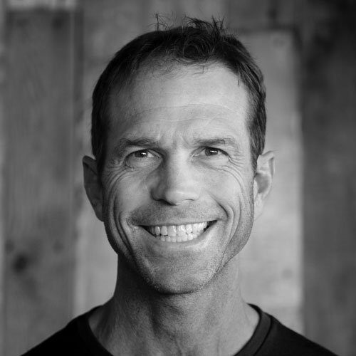

Chris Carr
Co-Owner AIARE Level III, AIARE Instructor, AMGA Alpine and Ski Guide Courses, B.S. Exercise Physiology Lives in Mt. ShastaChris has lived and climbed in the Mt. Shasta area since 1995. As a climber and guide he is inspired by the beauty and scale of Mt. Shasta. “The greatest joy of my role at SMG is the remarkable people I get to meet, both our climbers and our guides, I am surrounded by amazing people doing amazing things.” With hundreds of summits and countless ski descents, no one has more experience on Mt. Shasta. In 2003 he and Jenn became owners of SMG. Going strong for over 30 seasons and over 180 summits on the mountain, Chris is still immeasurably stoked for the next powder day and sharing it with his family. Chris’ role is in the general operations and administrative duties of Shasta Mountain Guides and you’ll often find him on the mountain checking on conditions.